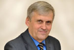

| Юрий Сипко о состоянии современной Церкви 26 июля, 2011 http://baptist.org.ru/news/other_smi/3020 |
| Экс-председатель Российского союза евангельских христиан-баптистов пастор Юрий Кириллович Сипко дал интервью о состоянии современной Церкви.
Юрий Кириллович, как можно охарактеризовать этап, на котором сейчас находится протестантская церковь? Мы до сих пор живем в режиме защиты веры, как в советское время, мы активны и боремся с проблемами или действительно имеем влияние на общество? Ваш вопрос чрезвычайно масштабный и чтобы ответить на него, я постараюсь его сузить, обозначив место и задачи Церкви в обществе. У Церкви нет задачи менять общественный строй, переустраивать мир, есть задача представлять Царство Божье на земле и эта задача сформирована Христом Иисусом. Она призывает всех последователей Господа к совершенству, «будьте совершенны, как совершенен Отец Ваш Небесный». И это совершенство в себя включает полное абсолютное познание Господа Иисуса Христа, познание Его качеств, Его высокой морали, Его Божественных атрибутов. И в этом отношении сегодня Церковь находится на пути познания, на пути к совершенству. Меняется общественный строй, те или иные принципы государственного устройства, государства появляются и исчезают, но Церковь, которая руководствуется Словом Божьим и Духом Святым пребывает с этой миссией – представлять Царство Божье на земле и расширять Его. Комментарий:
Действительно у Церкви "нет задачи менять общественный строй, переустраивать мир", потому что такая задача есть у каждого гражданина государства, и член поместной церкви, как гражданин имеет право совершенствовать социальную структуру государства. Поэтому независимо от того, вышел Советский Союз из сознания нашего или нашего общества, Церковь несет в себе величайшую миссию – представлять Божьи ценности и жить по ним. Что на этом пути мешает Церкви развиваться, а что способствует? Мешает, прежде всего, человеческая ограниченность – природная, греховная суть человека, над которой когда-то Бог произнес проклятие: «проклята за тебя земля, со скорбью будешь питаться во все дни, тернии и волчцы произрастит она тебе». И вот это проклятие – оно остается и проявляется, например, в том, что труд стал неким наказанием. Возделывание земли, из того радостного труда, что было у Адама, превратилось в некий тяжкий труд, надрывный. Между творением есть испорченные взаимоотношения. И это все препятствия. Самое серьезное препятствие – в личности каждого человека – эгоизм, пристрастие к некоему себялюбию, самолюбованию, неумение увидеть картину мира глазами Бога, а порой даже неспособность увидеть Бога в своей жизни. Это то, что мешает. Что способствует? Безусловно то, что Господь Иисус Христос сказал перед уходом с земли, что умолит Отца и пошлет Духа Утешителя, Он будет с нами и наставит нас на всякую истину, Он будет в нас пребывать, обличать и учить. И это самое важное, что имеет Церковь Божья – в сердце каждого христианина есть Дух Божий. Это как тяготение к добру, как помощь в победе над страстями плотскими. Это как руководство к действию, как постоянный компас, который ведет наши очи и ноги к небу и совершенству. Поэтому данность мира проклятого, земли проклятой, эта данность бессильна перед тем, что свершил Господь на кресте Своей пролитой кровью. Он разрушил эту кажущуюся беспросветную тьму и сегодня из нее есть выход в сияние небесного Царства, куда приглашает нас Христос и говорит – Я с вами. И Он – с нами. Если говорить о практических трендах – куда движется Церковь, какой мы ее будем видеть в будущем – будем ли мы видеть мегацеркви, домашние церкви или какие-то другие структуры? Если так приземленно видеть Церковь – как домашние церкви или мегацеркви, то сложно сказать. Я вижу больше миссию Церкви в познании Христа, в путешествии в совершенство. И мегацерковь, и домашняя церковь это все внешние механизмы, которые способствуют тому, чтобы этот главный вектор – познание Христа – не был утрачен. Главный вектор – путь к совершенству, «будьте святы, потому что Я свят». И мы освящаемся через общение, в малых ли группах, в больших ли церквах. Мы освящаемся через изучение Писания, через молитвенное общение с Богом. И вот это самая важная миссия Церкви, а не организационные структуры, не претензия на влияние в мире. Вовсе нет. У Церкви есть абсолютная и четкая задача – представлять Царство на земле, утверждать это Царство в сердцах людей. А уже внешние механизмы могут меняться, но во все времена малые группы были присущи – всегда ведь собирались по домам, преломляя хлеб, в простоте и веселии сердца – это апостольское время. В катакомбах во время гонений для того же собирались тысячи людей, это была гонимая Церковь. Когда люди сидели в одиночках заключенные за веру – это была тоже Церковь. В любых геополитических условиях Церковь оставалась местом, где царствовал Господь, где было и есть сосредоточие правды Божьей, свет в ночи, надежда для потерянных. И вот в этом миссии нам нужно не утратить свое значение. Весь мир лежит во зле, а в каждом представителе Царства Божьег о сияет Его свет. Поэтому наш путь – донести свет до каждой души. Поговорим о сложном, вот повсеместно существует проблема – люди покидают Церковь. Что можно сказать современным пасторам по этому поводу? Особенность постсоветского пространства – разрушены преграды, держащие Церковь в напряжении, создающие давление и таким образом защищающие Церковь от разложения, тлетворного влияния всевозможных свобод, которые, к сожалению, действуют у нас разлагающим образом. Для пасторов сегодняшнего времени самое важное, по моему мнению, - соблюсти себя в высочайшем стандарте духовного лидерства. Остаться лидером, свободным от влияния мира, свободным от меркантильных страстей, свободным от искушений политизации Церкви, свободным от страсти властвовать – и не только в рамках церкви, но и в государственных структурах. Все это чрезвычайно сильные искушения, и мир всегда хотел вовлечь в свою систему лидеров Церкви. И это самая опасная дорога. Можно говорить много красивых слов, но я убежден, что самое сильное действие для пастора – личный пример посвященности во всем – в одежде, в слове, в жизни. Пасторское представление Царства Божьего – лучшая проповедь и это архиважно сегодня. То, что порой кто-то занимается морализаторством в церкви, порой «избиением» с кафедры людей, бичуя их недостатки – это не высокая миссия, не то, что призван делать пастор. Ведь ответственность пастора – возвещать правду Божью. Врачует и исцеляет Слово Божье, воспитывает и дает силы для победы – Слово Божье. Поэтому когда мы «с высокой духовностью» начинаем бичевать людские недостатки, это может давать самолюбию некое удовлетворение, но это не меняет людей. Я знаю тысячи примеров, когда люди за время собрания и вздохнут, и пустят слезу, но выходят из церкви с тем же набором недостатков, и без всякой силы противостоять действию мира и плоти. Но сила возникает тогда, когда человек вооружен Писанием, вооружен уверенностью, что в нем живет Дух Святой, и Он хочет и может его менять – тогда человек становится воином, в котором происходит победа. И он борется с верой, а не как униженный и отвергнутый из-за несоответствия плоти. И это очень важно, особенно для нашей постсоветской ментальности крепостнического сознания, в котором всегда должен быть царь, господин, барин, который решит все твои проблемы – это вовсе не победоносное мышление. Это пораженческая стратегия. Может быть, проблема с уходом людей – в изменении тематики проповеди? Ведь если раньше говорили больше о кресте, спасении, базовых основах веры, то сегодня больше говорят о практических аспектах и о решении проблем? Возможно. Здесь есть недостаток и пасторского духовного уровня, когда они не до конца понимают свою задачу. Ведь пасторы это не особый клан людей, которым вверены души. Мы, баптисты, исповедуем принцип общего священства. По Писанию – мы народ избранный, святой, взятый в удел, призванный возвещать совершенства Призвавшего. Собрание церкви – это собрание искупленных Божьих детей, людей, которые носят в себе образ Божий. И собираясь вместе эти люди несут свидетельство, что Бог с ними, несут молитвы за погибающий мир, за своих братьев по вере, и вместе пред Господом они преклоняются, чтобы Он Словом Своим и Духом укрепил каждого. Увы, наши собрания часто превращены в классы, и зачастую это все один и тот же первый класс. И получается схема - ученик, ни на что не способный, и учитель – всезнающий. Эта модель требует коррекции сегодня. Каждый призван пребывать в Слове Божьем, искать Его воли, свидетельствовать о Его спасении. И пастор – это же один из всех остальных. Более того, Христос говорит – первый из вас тот, кто более всех слуга. Пастор не наместник Бога на земле, как некоторым может показаться, это слуга, который может и ноги всем вымыть, и трапезу для всех приготовить. Поэтому здесь есть поле для перемен и изучения Евангельской модели Церкви. Последнее время можно наблюдать две большие беды - то, что в Церкви много людей, в действительности, не рожденных свыше, и то, что вопрос ученичества как-то ушел на второй план, оставшись лишь по отношению к «профессиональным» служителям. Ну, я бы не стал развивать тезис о том, что многие не рождены свыше. Думаю, что это претензия на такое «духовное знание», которое нам в действительности не дано. Нет такого ни в Библии, ни в жизни – права другого человека оценить рожден ли кто свыше или нет. Ответственность проповедника, пастора – проповедовать истину Божью, в том числе и о рождении свыше, которая открыта для нас. Да, есть в Писание место – по плодам их узнаете, но ведь после рождения есть разные стадии, в том числе и младенчество, когда плодов от младенца ждать бесполезно. Ведь ему еще надо научиться и ходить, и отличать белое от черного, а чистое от нечистого. И вот здесь нужен пастырь-наставник, пастырь с сердцем отца, а не бичующий всезнайка, который с высоты своего пьедестала, надмеваясь над церковью, может показывать на их недостатки. Это советская ментальность, и она чрезвычайно в нас живуча. Этот коллективистский ум, неспособность выделить из толпы личность, индивидуума. Неспособность в этом индивидууме увидеть Бога, Христа. Я бы скорее культивировал эту мысль – «вы, во Христа крестившиеся, во Христа облеклись». «Вы погреблись с Ним крещением в смерть» - для меня это очень важно и самому постичь, и чтобы каждый член церкви понимал, что оставаясь в этом вот пиджаке и заботясь о хлебе насущном для себя и своей семьи, я – новый сосуд, и вся моя плотская неопределенность погреблась крещением в смерть. Мы в смерть Его крестились – вот где происходит водораздел, место, где закончилось господство плоти. Я эту плоть с ее неопределенностями похоронил. А вот Христе – решение всех проблем, вы – во Христе, и значит, у вас больше нет тупиков и нерешаемых вопросов. Беседовал Слава Сапожников Источник: "Омский баптист" со ссылкой на Ekklezia.ru |